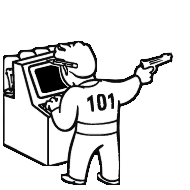

Kacper Rzepecki
born engineer
Highly skilled, quality oriented engineer.
Experienced in both, software development and testing.
Experience in cloud development world largest ERP system - Microsoft Dynamics AX.
Experience in project and process management.
Strong educational and theoretical background.
Deep domain knowledge in areas of discrete and process manufacturing, inventory management and costing.
Experience
Senior Engineering Manager
Microsoft
2016 -
Responsible for:
- Successful redesign and development of Cost Accounting module with powerful integrations to on-premise systems as well as PowerBI
- Managing team of most skilled engineers in the field
- Project management
- Attracting, recruiting and retaining top talents in the field
- Coaching, mentoring and supporting career of each member of the team
- Representing Microsoft during external conferences, recruiting events, meetings with partners and customers
Software Engineer II
Microsoft
2014 - 2016

-
Responsible for:
- Design and development of complex features in area of SCM and Costing in Dynamics AX.
- Migration of Dynamics AX to the Azure platform.
- Close collaboration with customer support organization and Microsoft Partners on fixing customer's issues.
- Facilitating an Agile process in the organization as a SCRUM master.
-
Key accomplishments:
- Design and implementation of the Recycled Byproduct feature.
Software Engineer
Microsoft
2013 - 2014
-
Responsible for:
- Design and development of new features in Dynamics AX.
- Improving quality of existing features.
- Facilitating an Agile process in the organization as a SCRUM master.
- Providing end-to-end scenario automation.
-
Key accomplishments:
- Design and development of the Cost Controller Role Center.
- Improvements in the area of Process Industries costing.
Software Development Engineer in Test
Microsoft
2011 - 2013
-
Responsible for:
- Design and development of test automation frameworks.
- Design and development of test automation for assigned features.
- Collaboration with Microsoft customers and partners to gather and validate requirements.
- Ensuring the quality of new features leveraging deep domain knowledge and understanding of customer scenarios.
-
Key accomplishments:
- Significant performance improvements of existing test automation.
- Validation of quality of the Cost Accounting module.
- Validation of quality during onboarding of the Process Industries solution.
C++ developer
Google Summer of Code
2010

- C++ developer for CGAL (Computational Geometry Algorithms Library)
- Responsible for simplifying the Triangulation 3 API
-
Extensive use of
- C++ templates
- Boost libraries
- Advanced language structures
- Algorithmic background
C# developer / team leader
Imagine Cup 2010
2009 - 2011
- Leader of the SinciPUT team, project BioAvatar.
-
Responsible for:
- Design and development of an XML system for description of a non-linear user interaction system
- Development of speech synthesis and recognition system in .NET
- Top 10 in Poland.
- The project was continued till Feb 2011 as a B.Sc. dissertation.
C# / Python developer
Mobile Systems Research Laboratories
Poznan University of Technology
2009

- C# and Python developer as part of the PROTEUS project (Integrated Mobile System Supporting Counter-terrorism and Anti-crisis operations)
-
Responsible for:
- GIS module development
- Remote LDAP management system
- Mailman list management plugin for TRAC CMS
Student researcher
Institute of Computing Science, Poznan University of Technology
2009
- Analysis of existing failure recovery mechanism in web servers and messaging systems.
- Analysis on how REST service architecture principle could be leveraged to achieve failure resistance.
- Development of failure resistant REST service.
- Technologies: SHOAL, JBOSS, JBOSS Messaging, JGroups.
Education
Engineer's Degree
Poznan University of Technology
Faculty of Computing
Computer Science
2007 - 2011
- Rector's Scholarship for extraordinary results
- Member of Computing Science Club council board
- B.Sc. title with honors (A+ grade)
Master's Degree
Poznan University of Technology
Faculty of Computing
Computer Science
2011 - 2012
- Field of study: Intelligent Decision Support Systems
- Rector's Scholarship for extraordinary results
- M.Sc. title with honors (A+ grade)
Certificates
- MCTS: .NET Framework 4, Data Access
- MCTS: .NET Framework 4, Service Communication Applications
- MCTS: .NET Framework 4, Windows Applications
- MCPD: Windows Developer 4
Contact